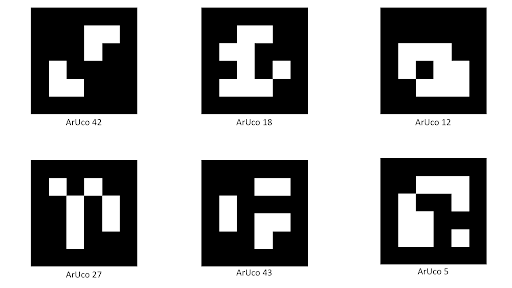
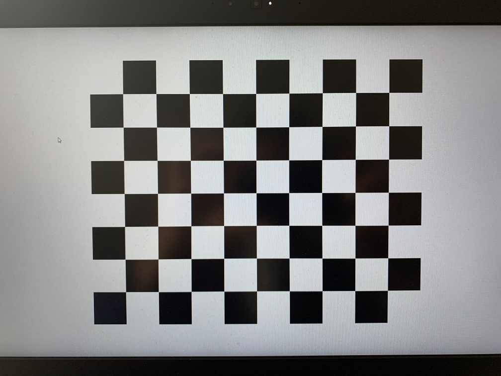
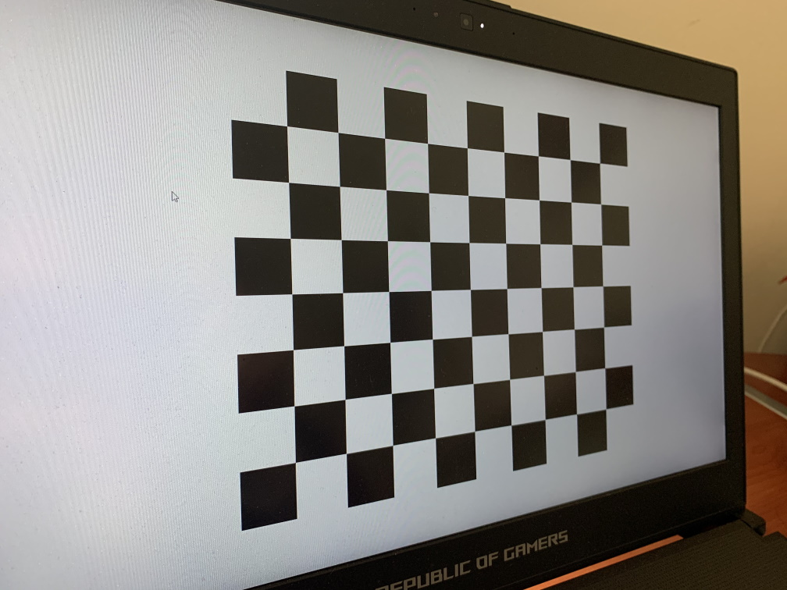
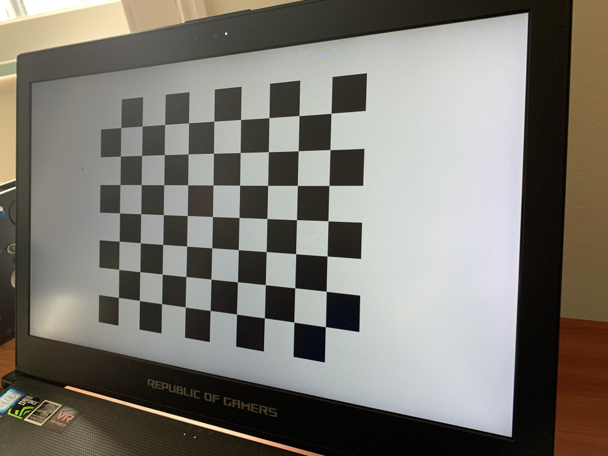
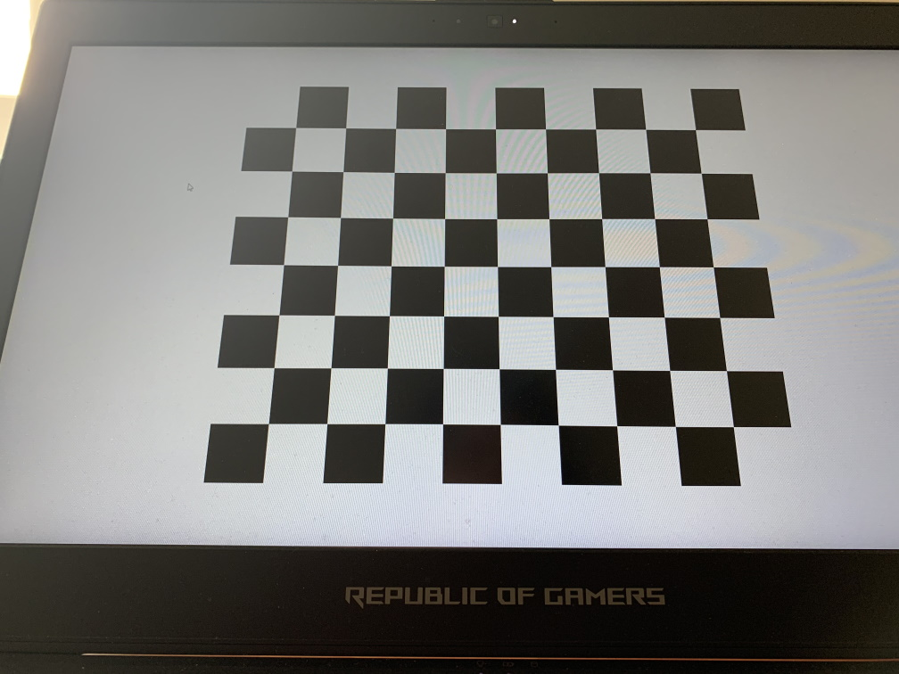
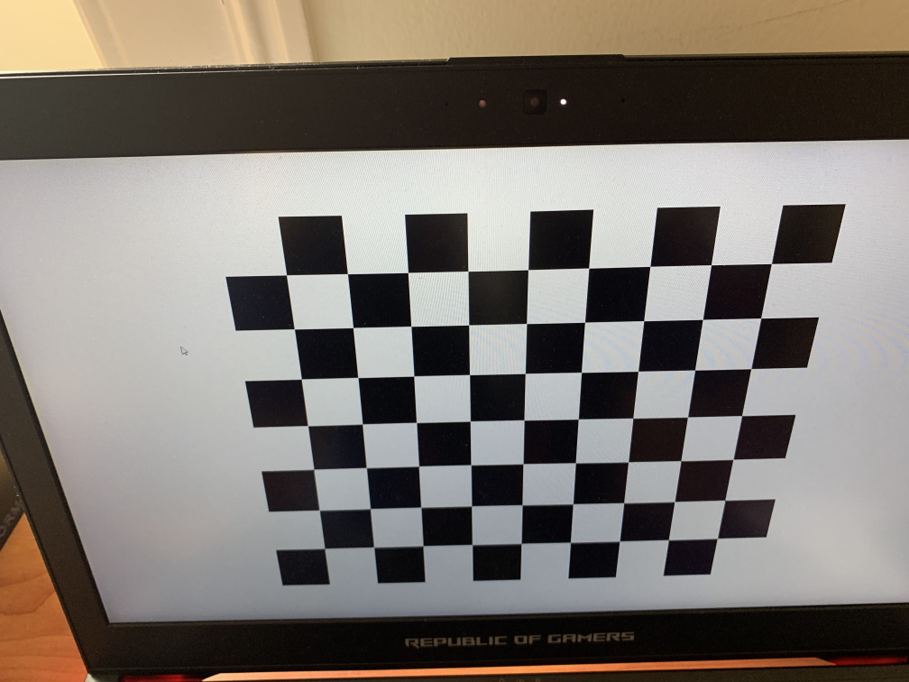
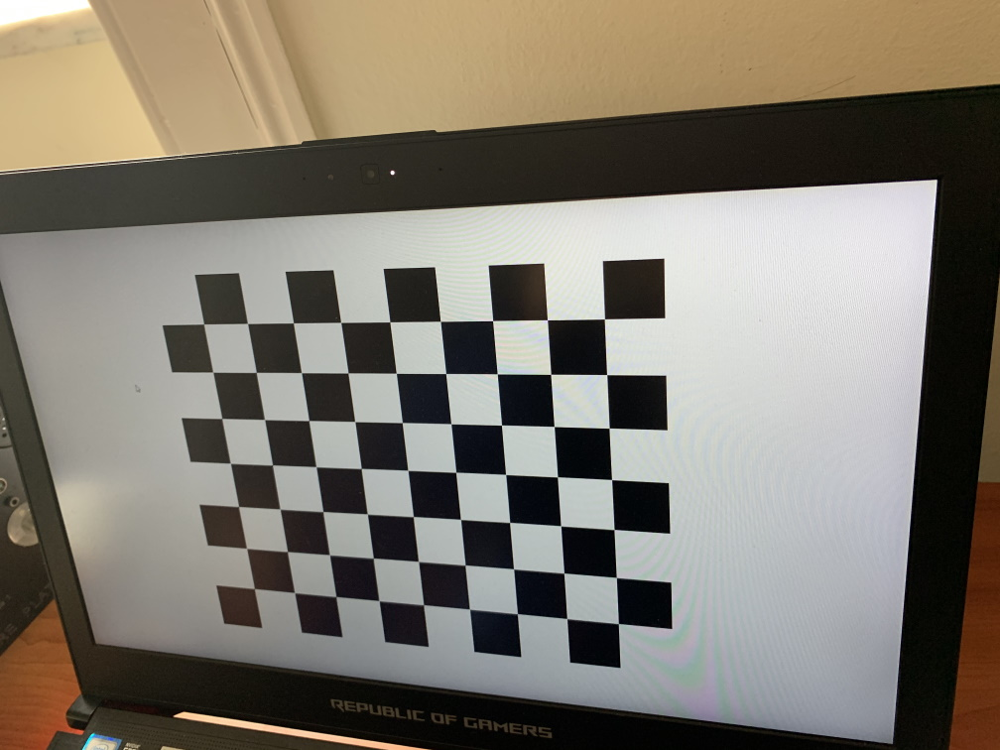
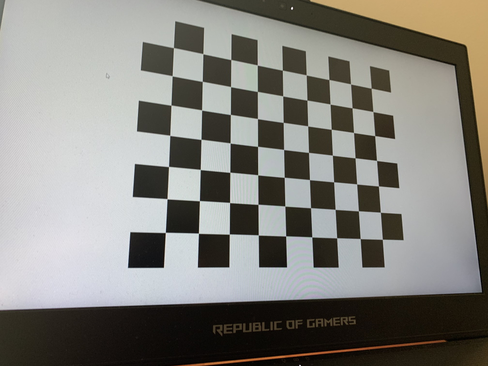
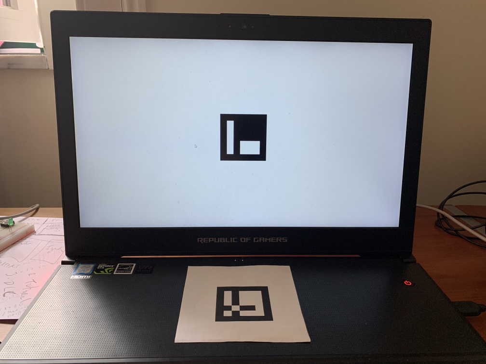

Display Position
The workflows in this article can be found here.
Display Position Calibration
BonVision is fundamentally based on creating stimuli that are true to the experimenter's definition of the visual environment around a subject, and display devices (monitors/projectors) are merely windows into this environment. Therefore, it is important to know which part of the environment the displays are looking into.
The position of the visual field that the display is looking into is defined by the parameters in the ViewPort node. Specifically, the parameters: ___, ____, ____, & ____.
There are two ways of calibrating the position of a display in BonVision:
1. Old school with ruler and protractor
Measure the physical distances and angles. This can get a little tricky with getting accurate measurements of angle. However, if you have a method to measure this, or are happy with approximate values, these are the measurements you would need:
- The size of the display in azimuth and elevation
- The distance of the bottom of the screen from the subject's position
- The angles of the __ __ of the monitor from the subject's position
2. Automated calibration with camera
We developed these workflows to enable easy and effective calibration of display position. Conceptually, this is done using a calibrated camera (we provide a workflow to calibrate here) and Aruco markers to identify the 3D coordinates of the display relative to the subject.

The workflow identifies the Aruco patterns on the display and in the subject's position, using a calibrated camera, and automatically calculates the display's position. This automatic calibration has three workflow associated with it (each of them is expanded on below):
A. Measuring camera intrinsics
B. Show an Aruco image on the display
C. Calibrate the screen position
NOTE: To make it convenient, we have the option of calibrating the display by using your phone camera. You would need to take pictures of the setup as described below and upload the images on a system running Bonsai.
A. Measuring camera intrinsics
This workflow is to calibrate the intrinsic properties of the camera-lens combination, using standardized OpenCV formats. If you have previously calibrated the camera, you can simply save the value in the OpenCV format and link the function C (below) to that file. Alternatively, you will need to run this program. Running it displays a checkerboard pattern on the screen. (You can also print a checkboard patter of known size). Once it is displayed in the screen, measure the size a unit square and enter it under __ __ After that you will have to take pictures of the checkerboard pattern from different camera viewing angles. In the workflow, an image can be taken by hitting the spacebar. As a standard, we use 7 images (illustrated with figures below):
- from the front of the pattern

- from the Left

- from the Right

- from below the pattern

- from above

- from the top, right corner

- from the bottom left corner

B. Measure display size using a Marker
We again use an Aruco Marker to define the size of the display. The workflow __ __ displays a marker in the centre of the screen. One can then adjust the size of the marker by using the up/down keys. What we would like it to match the marker size with that of the one in the subject's position. We can do this by just measuring the two of them, or placing the paper over the screen and ensureing that they are the same size (there is often sufficient transparency on the paper to be able to do this. If not, go greener and use thinner paper in general). This output a display size that can be verified by measuring the actual dimensions of the screen.
C. Calibrate the screen position
We would need to have one Aruco marker on the centre of the display and one at the positon of the subject. The latter is ideally a print out of a known size. Once these are displayed, we just need them to be viewed simultaneously through the camera and run the workflow which generates the calibrated position values. As Aruco markers are directional, we have chosen to use Acuro marker Original #45 (shown below), and the marker need to be placed such that the thin side is looking in the direction that the subject is looking.
Take an picture of the setup when the two markers are visible and run the workflow.

Note: Make sure that there are just the two markers within the image.
Multiple displays:
These would have to be individually calibrated at the moment.